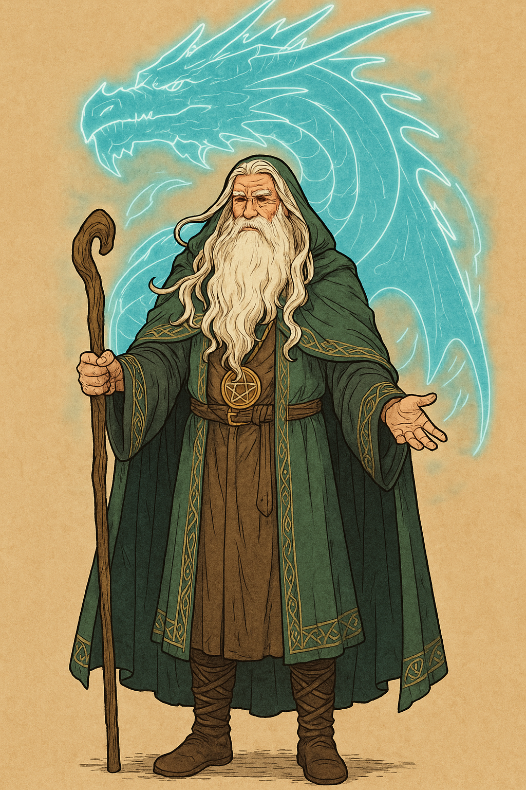
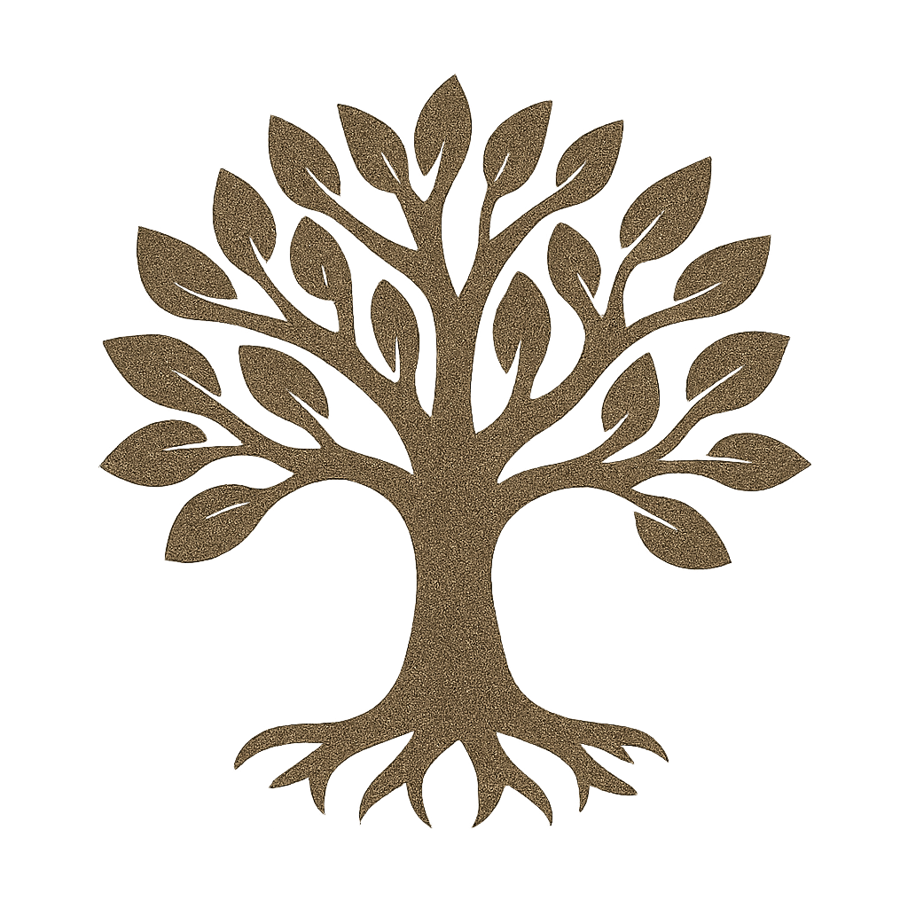

II · Pantheon Archivblatt 03
Der Alte Pantheon
Der alte Glaube der Druiden
Der von den Druiden überlieferte Urglaube: neun Göttliche, fünf Souveräne und fünf Untergötter, deren Tiergestalten die Verbindung zwischen Welt und Gottheit sichtbar machen.

Gestalten dieser Überlieferung
Götterkreis & Gestalten
Die Namen, Bildnisse und Aspektzuordnungen dieser Glaubensrichtung. Verweise führen zu den entsprechenden Überlieferungen im Glaubenscodex.
Die Neun des Alten Glaubens
09Die Fünf Souveräne
05Die Untergötter
05Diese Spur verliert sich im Archiv.
Zu dieser Suche wurde kein Eintrag gefunden. Versucht einen anderen Namen oder öffnet wieder alle Kapitel.
Einführung
In den tiefen Schatten der frühen Menschheitsgeschichte erwuchs ein Glaubenssystem von außergewöhnlicher Komplexität und Tiefe, das die Grundlage für zahlreiche Zivilisationen bildete. Dieser Urglaube verehrte neun übernatürliche Wesen, deren Tugenden und Ideale das Leben und die Moral der Menschen maßgeblich prägten. Die Ursprünge dieses Glaubens gehen auf das zurück, was heute als „Der Alte Pantheon“ bekannt ist. Im Laufe der Zeit wurde dieser Urglaube durch den Einfluss anderer religiöser Systeme reformiert und transformiert, darunter der Alerische Kult, die Hohen Drei und das Nordische Pantheon.
Obwohl sich die ursprünglichen Praktiken und Überzeugungen im Laufe der Geschichte gewandelt haben, wird der alte Glaube von nur noch wenigen sehr alten Völkern in seiner ursprünglichen Form praktiziert. Er gilt als der allererste Glaube , aus dem sich sämtliche nachfolgende Religionen entwickelt haben. Das Erbe des Alten Pantheons lebt in den verschiedenen religiösen Traditionen weiter, die die Neun Göttlichen und ihre Prinzipien in unterschiedlichen Formen und Kontexten ehren.
Hintergrund
Der Ursprung des Glaubenssystems, das heute als „Der Alte Pantheon“ bekannt ist, reicht weit zurück in die frühen Tage der Menschheit. In einer Zeit, als die Welt noch von mystischen Kräften und Naturgewalten beherrscht wurde, suchten die Menschen nach einer tiefergehenden Erklärung für ihre Existenz und die Ordnung des Universums. Dieser erste Glaube stellte sich als ein umfassendes und komplexes Pantheon heraus, das neun übernatürliche Wesen verehrte, deren Tugenden und Eigenschaften die moralischen und spirituellen Grundlagen der frühen Zivilisationen prägten.
Der Alte Pantheon entstand in einer Ära, in der die Menschen noch in enger Verbindung mit der Natur lebten und die Welt durch die Linse des Übernatürlichen betrachteten. In dieser Zeit entwickelten sich die ersten Vorstellungen von Göttern und Göttinnen, die die Kräfte der Natur personifizierten und die wichtigsten Aspekte des Lebens repräsentierten. Die neun Göttlichen wurden als zentrale Figuren dieses Glaubenssystems etabliert, und jede von ihnen verkörperte spezifische Tugenden, die das Leben der Menschen lenkten und inspirierten.
Die Göttlichen waren nicht nur mythologische Figuren, sondern auch essentielle Ankerpunkte für die ethischen und kulturellen Werte der Gesellschaft. Durch Rituale, Zeremonien und tägliche Anbetung versuchten die Menschen, die Gunst der Göttlichen zu erlangen und ihre Ideale in ihrem Leben zu integrieren.
Mit der Zeit, als sich die Zivilisationen entwickelten und die Welt komplexer wurde, kam es zu religiösen Reformen und Veränderungen. Der Einfluss anderer religiöser Strömungen, insbesondere des Alerischen Kultes, der Hohen Drei und des Nordischen Pantheons, führte dazu, dass der alte Glaube überarbeitet und in neue Formen gegossen wurde. Diese Reformen führten zu einer Neudefinition und Erweiterung der ursprünglichen Überzeugungen, wobei viele Traditionen und Praktiken des Alten Pantheons in den neuen Glaubenssystemen weiterlebten.
Trotz der Veränderungen und der Entstehung neuer religiöser Bewegungen bleibt der Alte Pantheon ein bedeutender Teil der religiösen Geschichte. Er gilt als der Urglaube, von dem sich alle späteren Religionen und Glaubenssysteme ableiten. Der alte Glaube bildet die Grundlage für viele der heutigen religiösen Überzeugungen und Praktiken, und seine Symbole und Prinzipien finden sich in den unterschiedlichen religiösen Traditionen, die im Laufe der Jahrhunderte entstanden sind.
Der Alte Pantheon ist nicht nur ein Relikt der Vergangenheit, sondern auch ein lebendiges Erbe, das von sehr alten Völkern in seiner ursprünglichen Form weiterhin verehrt wird. Dieser Glaube bietet eine tiefere Verbindung zu den spirituellen und natürlichen Kräften der Welt und dient als Erinnerungsstück an die ersten Versuche der Menschheit, das Unbekannte zu verstehen und zu verehren.
Die Neun Göttlichen , deren Eigenschaften und Tugenden die Grundlagen des Glaubenssystems bilden, sind nach wie vor zentrale Figuren, die in den verschiedenen religiösen Traditionen verehrt werden. Die Fünf Souveränen, als Eckpfeiler der Welt und Stützen der kosmischen Ordnung, repräsentieren die wesentlichen Elemente und Kräfte, die das Universum im Gleichgewicht halten.
In der heutigen Zeit sind die ursprünglichen Tiere , die den Göttlichen zugeordnet sind, nicht nur Symbole der Macht und der Tugenden dieser Götter, sondern auch kulturelle Erbstücke, die die Verbindung zwischen der Menschheit und den übernatürlichen Kräften verdeutlichen. Der Alte Pantheon bietet somit eine tiefgreifende und historische Perspektive auf die religiöse und kulturelle Entwicklung der Menschheit, die in der Vielfalt und Komplexität der heutigen religiösen Landschaft nachwirkt.
Die Infernalen
Im Dunkel der spirituellen Welt lauern die Infernalen, die finsteren Gegenstücke der Neun Göttlichen. Diese Mächte, die in der Vorstellung des Alten Pantheons als natürliche Gegenspieler der lichtvollen Göttlichen erscheinen, sind ein furchteinflößendes und zugleich respektiertes Element des Glaubenssystems. Die Infernalen verkörpern die dunklen Aspekte der Existenz und stehen im krassen Gegensatz zu den Tugenden und Idealen der Neun Göttlichen.
Die Infernalen sind nicht nur einfache Gegner, sondern komplexe und mächtige Entitäten, deren Einfluss die Welt auf eine bedrohliche Weise beeinflussen kann. Während sie im Druidenkult und im Alten Pantheon mit einer Mischung aus Furcht und Respekt betrachtet werden, gilt es als unerlässlich, ihre Gegenwart zu meiden. Man glaubt, dass diese Infernalen eine Form von Prüfungen darstellen, die den Menschen auferlegt werden, um ihren Willen und ihre Stärke zu testen. Ihr Einfluss wird als Herausforderung angesehen, der die Menschheit dazu zwingt, sich den dunklen Aspekten ihrer Natur zu stellen und sich in ihrer Tugendhaftigkeit zu bewähren.
Im Gegensatz zu den Göttlichen, deren Eigenschaften und Symbolik positive Kräfte repräsentieren, sind die Infernalen mit Chaos, Zerstörung und Verderbnis assoziiert. Ihr Auftreten in der Welt wird als Test für den Glauben und die moralische Integrität der Menschen verstanden. Die Infernalen werden als Prüfungen angesehen, die nicht nur die Schwächen der Menschen offenbaren, sondern auch die Gelegenheit bieten, über sich selbst hinauszuwachsen und sich den Herausforderungen des Lebens zu stellen.
Der Verräter: Der Gefallene Gott
Unter den Infernalen gibt es eine besonders finstere und bedeutende Entität – „Der Verräter“. Einst war der Verräter Teil der Neun Göttlichen, ein angesehener Gott, der in den höheren Reihen des Pantheons stand. Doch der Verräter fiel vom Pfad der Tugend ab und wurde durch die Verführung eines mächtigen Feindes in die Irre geführt. Dieser Fall aus Gnade führte zu einem schrecklichen Ereignis: dem Riss.
Der Riss, den der Verräter herbeiführte, öffnete ein Tor in die Welt, durch das dunkle und verderbliche Kräfte eindrangen. Dieses Ereignis brachte großes Unheil über die Menschheit und führte dazu, dass die Infernalen und andere bösartige Wesen in die Welt gelangten. Der Verräter wurde dadurch nicht nur zum Symbol des Verrats und der Korruption, sondern auch zu einem Mahnmal für die Gefahren des Abweichens von den göttlichen Idealen.
Der Riss, den der Verräter verursachte, stellte die Welt vor enorme Herausforderungen und Prüfungen. Die menschliche Gesellschaft musste sich nun nicht nur den Prüfungen der Infernalen stellen, sondern auch den Konsequenzen des Verrats und der Zersetzung, die durch diese dunkle Entität freigesetzt wurden. Der Verräter, als eine Art Anti-Gott, verkörpert die größte Bedrohung für die Ordnung und das Gleichgewicht des Universums, und sein Name wird in ehrfurchtsvollem Unmut und wachsamem Respekt erwähnt.
Die Infernalen und der Verräter sind also nicht nur Figuren der Furcht, sondern auch Symbole für die ständige Auseinandersetzung zwischen Licht und Dunkelheit, Ordnung und Chaos. Sie stehen als Erinnerung an die Zerbrechlichkeit der menschlichen Moral und die Notwendigkeit, sich stets den ethischen und spirituellen Herausforderungen des Lebens zu stellen. Während die Infernalen als Prüfungen angesehen werden, die es zu überwinden gilt, ist der Verräter der Inbegriff der Gefährdung und des Verrats, die das Gleichgewicht zwischen den göttlichen Mächten und den dunklen Kräften der Welt bedrohen.
Druidentum
Das Druidentum entstand in den frühen Tagen der Menschheit als eine frühzeitliche Priesterschaft, die eine zentrale Rolle im Leben der Menschen spielte. Die Druiden, als weise Führer, Richter und Lehrmeister, schufen eine Struktur, die den Menschen Orientierung und Unterstützung bot. Ihre Prinzipien und Lehren basierten auf den Idealen der Neun Göttlichen, und sie betrachteten sich als Vermittler zwischen der menschlichen Welt und dem Göttlichen Pantheon.
In der Blütezeit der Druidentum waren die Menschen eng mit den Tugenden und Weisheiten der Druiden verbunden. Diese Verbindung ermöglichte ein florierendes Leben und eine wohlgeordnete Gesellschaft, die sich in Harmonie mit den göttlichen Prinzipien und der natürlichen Welt befand. Die Druiden lehrten die Menschen, sich an den Tugenden der Göttlichen zu orientieren und ein Leben in Einklang mit der Natur und den spirituellen Kräften zu führen. Ihre Weisheit, die direkt von den Göttlichen bezogen wurde, half dabei, das Gleichgewicht und die Ordnung in der Welt zu bewahren.
Der Fall und die Pervertierung
Mit der Zeit begannen sich die Menschen jedoch zunehmend von den Lehren der Druiden und den Tugenden des Alten Pantheons abzuwenden. Die Verführung durch die Infernalen und die Ablenkung durch neue, oft pervertierte Religionen führten zu einer Erosion der ursprünglichen Werte. Als die Menschen die Druidenkulte und den Alten Pantheon vernachlässigten, entstanden neue Religionen, die oft durch die Dunkelheit und Verderbnis der Infernalen beeinflusst wurden. Diese neuen Pantheone und Götter wurden häufig zu Götzen und verzerrten Abbildern der einst reinen und tugendhaften Vorstellungen.
Die Götzen und pervertierten Gottheiten, die in diesen neuen Religionen verehrt wurden, führten zu einer Verdorbenheit des Glaubens und einer Spaltung zwischen den Menschen und den ursprünglichen göttlichen Idealen. Die ursprüngliche Harmonie und das Gleichgewicht, das die Druiden mit ihrer Weisheit und ihrem Dienst an den Göttlichen bewahren wollten, gingen verloren.
Die Rolle der Druiden als Gärtner der Erde
Trotz der Veränderungen und der Abwendung von ihrem ursprünglichen Glauben sehen sich die Druiden weiterhin als „Gärtner der Erde“. In ihrem Verständnis sind sie die Hüter und Pfleger der Welt, die durch einen harmonischen Einklang mit der Natur und den göttlichen Kräften das Gleichgewicht aufrechterhalten. Sie betrachten ihre Aufgabe als eine heilige Pflicht, im Dienst der Göttlichen zu stehen und die Welt durch Reinigung und Pflege zu bewahren.
Durch ihre tiefgehende Verbindung mit Aleria, der Erde, und durch das Einswerden mit ihr, streben die Druiden danach, auch Eins mit dem Göttlichen zu werden. Diese spirituelle Verbindung ermöglicht es ihnen, die Weisheit und die Kräfte der Neun Göttlichen in die Welt zu bringen und so das ursprüngliche Gleichgewicht und die Ordnung wiederherzustellen. Die Druiden sehen sich als Bindeglied zwischen der natürlichen Welt und dem Göttlichen, und ihre Rituale und Praktiken sind darauf ausgelegt, die Harmonie und Reinheit der Welt zu erhalten.
In ihrer Rolle als Wächter und Hüter tragen die Druiden die Verantwortung, das alte Wissen und die Tugenden der Neun Göttlichen zu bewahren und an die nachfolgenden Generationen weiterzugeben. Auch wenn der Einfluss des Alten Pantheons und der ursprünglichen Religionen im Laufe der Zeit geschwunden ist, bleibt das Erbe der Druiden ein Symbol für den ewigen Wunsch nach Harmonie und Balance in einer sich ständig verändernden Welt.
Ämter, Dienste und Berufungen
Druiden Hierarchie
Die überlieferte Reihenfolge und die Aufgaben dieser Glaubensgemeinschaft. Öffnet einen Rang, um seine Beschreibung zu lesen.
01Druiden Ältester
Der Druidenälteste ist der ranghöchste und autoritativste Führer innerhalb der druidischen Gemeinschaft. Er wird aus den Erz-Druiden gewählt und repräsentiert die höchste geistige und administrative Autorität der Druidenordnung. In seiner Rolle trägt der Druidenälteste die Verantwortung für die Gesamtleitung und das Wohl der druidischen Gemeinschaft. Er koordiniert die wichtigsten Entscheidungen, lenkt die strategische Ausrichtung und sorgt für die Wahrung der traditionellen Werte und Rituale. Der Druidenälteste fungiert als oberster Berater, Vermittler und Entscheidungsträger sowohl innerhalb der Gemeinschaft als auch in der Interaktion mit anderen Mächten und Königreichen. Seine Weisheit, Erfahrung und Macht sind entscheidend für die Stabilität und das Gleichgewicht der druidischen Welt.
02Erz-Druide
Der Erz-Druide ist die höchste Stufe innerhalb der druidischen Hierarchie und nur wenigen Druiden ist es gegeben, diesen erhabenen Rang zu erreichen. Erz-Druiden sind wahre Naturgewalten, deren Macht und Weisheit nahezu göttlicher Natur sind. Sie beherrschen ihre jeweiligen Domänen in unvergleichlicher Weise und sind in der Lage, die tiefsten Geheimnisse der Natur zu verstehen und zu lenken. Als die stärksten und einflussreichsten Druiden führen sie bedeutende Entscheidungen für die Gemeinschaft und für das Gleichgewicht der Welt herbei. Unter den Erz-Druiden wählen sie einen Ältesten, der als Druidenältester fungiert und die höchste Autorität innerhalb der druidischen Ordnung darstellt. Dieser Älteste ist verantwortlich für die Leitung des gesamten druidischen Ordens und für die Aufrechterhaltung der übergeordneten Prinzipien und Ziele der druidischen Gemeinschaft.
03Meister-Druide
Der Meister-Druide ist eine seltene und angesehene Position innerhalb der druidischen Hierarchie, die nur von wenigen erreicht wird. Als höchste Autorität nach den Erzdruiden ist der Meister-Druide ein Experte auf seinem speziellen Gebiet, sei es in den Bereichen der Naturmagie, der Heilkunst, der Ritualführung oder anderen druidischen Disziplinen. Obwohl er nicht alle Aspekte des druidischen Wissens gemeistert haben muss, zeichnet sich der Meister-Druide durch außergewöhnliche Fähigkeiten und tiefes Wissen in seinem Spezialgebiet aus. Seine Expertise wird für die fortgeschrittene Lehre, die Leitung komplexer Aufgaben und die Beratung der Erzdruiden genutzt. Der Meister-Druide spielt eine entscheidende Rolle bei der Weitergabe von fortgeschrittenem Wissen und der Entwicklung neuer druidischer Praktiken.
04Hoch-Druide
Der Hoch-Druide ist eine herausragende Persönlichkeit innerhalb der druidischen Gemeinschaft, die eine besonders bedeutende Rolle und umfassende Verantwortung innehat. Er kann als wichtiges Sprachrohr zwischen den Druidenorden und den Königreichen fungieren oder als Anführer eines großen Druidenzirkels agieren. Der Hoch-Druide trägt entscheidend zur Leitung und Koordination der druidischen Aktivitäten bei, organisiert große Zeremonien und Rituale und vertritt die Interessen der Druiden auf politischen und gesellschaftlichen Ebenen. Seine Aufgaben umfassen sowohl die strategische Planung und Entscheidungsfindung als auch die Aufrechterhaltung der druidischen Traditionen und der spirituellen Integrität der Gemeinschaft.
05Groß-Druide
Der Groß-Druide ist ein erfahrener und hochrangiger Druide, der erheblich mehr Verantwortung innerhalb der druidischen Gemeinschaft trägt. Er verwaltet möglicherweise einen eigenen Hain oder ein Heiligtum und ist für die Aufrechterhaltung und Pflege dieser heiligen Orte zuständig. In seiner Rolle hat der Groß-Druide die Aufsicht über mehrere Druiden und Druidensprösslinge, denen er Anleitung und Führung bietet. Er ist verantwortlich für die Durchführung bedeutender Rituale und Zeremonien, die Pflege der druidischen Traditionen und die Wahrung des Gleichgewichts zwischen Natur und Zivilisation. Der Groß-Druide spielt eine Schlüsselrolle bei der Entscheidungsfindung innerhalb der Gemeinschaft und trägt zur strategischen Planung und Leitung bei.
06Wächter-Druide
Der Wächter-Druide ist ein erfahrener Druide, der sich auf die Ausbildung und Mentoring von weniger erfahrenen Druiden, insbesondere Druidensprösslingen, spezialisiert hat. Er übernimmt eine zentrale Rolle in der Ausbildung neuer Druiden und vermittelt ihnen sowohl praktisches Wissen als auch tiefere Einsichten in die druidischen Traditionen und Lehren. Als Mentor führt der Wächter-Druide seine Schützlinge durch ihre Entwicklung, leitet sie bei wichtigen Aufgaben und Ritualen an und sorgt dafür, dass sie die erforderlichen Fähigkeiten und das Verständnis für ihre zukünftige Rolle innerhalb des Ordens erwerben. Darüber hinaus wird er oft mit speziellen Aufgaben betraut, die seine umfassende Erfahrung und Expertise erfordern. Der Wächter-Druide spielt somit eine entscheidende Rolle in der Sicherstellung der Kontinuität und Integrität der druidischen Gemeinschaft.
07Druide
Der Druide ist ein vollwertiger Mitglied der druidischen Gemeinschaft, der den bedeutenden Prozess der "Einswerdung" erfolgreich absolviert hat. Durch diesen Prozess ist er „Eins mit der Welt“ geworden, was ihm tiefere Einblicke und eine besondere Verbindung zur Natur und den druidischen Kräften verleiht. Obwohl der Druide nun offiziell den Rang eines Druiden erreicht hat, befindet er sich noch am Anfang seiner Reise und hat viel zu lernen. In seiner aktuellen Rolle übernimmt er vorwiegend triviale Dienste und Aufgaben innerhalb seines Ordens, um praktische Erfahrung zu sammeln und sich weiter in die druidischen Traditionen einzuarbeiten. Der Druide arbeitet daran, seine Fähigkeiten zu vertiefen und sich auf künftige, verantwortungsvollere Rollen innerhalb der Gemeinschaft vorzubereiten.
08Druiden-Spross
Der Druidenspross ist ein niederrangiger Druide, der auf eine alternative Weise in den Rang eines Druiden gelangt ist, sei es durch besondere Umstände, außergewöhnliche Umstände oder alternative Wege der Weihe. Obwohl er ein gewisses Maß an druidischem Wissen und Fähigkeiten besitzt, ist sein Potenzial begrenzt im Vergleich zu vollwertigen Druiden. Der Druidenspross erfüllt grundlegende Aufgaben innerhalb der druidischen Gemeinschaft und nimmt an Ritualen und Zeremonien teil, jedoch mit eingeschränkten Verantwortlichkeiten und Einflussbereichen. Er dient als Bindeglied zwischen den höheren Druiden und den weniger erfahrenen Mitgliedern der Gemeinschaft und trägt zur Erhaltung der druidischen Traditionen und Lehren bei.
09Adept
Der Adept ist ein erfahrener Kleriker, der bereits bedeutende Verantwortung übernommen hat, jedoch noch kein vollwertiger Druide ist. In seiner Rolle dient er den Menschen als hochrangiger Kleriker und übernimmt oft leitende Aufgaben innerhalb der Gemeinschaft. Er fungiert als wichtiges Sprachrohr zwischen den Druiden und den Menschen, indem er die druidischen Lehren und Werte weitergibt und deren Anliegen an die Druiden übermittelt. Der Adept ist in der Lage, komplexe Rituale durchzuführen und wichtige Zeremonien zu leiten. Durch seine fortgeschrittene Position bereitet er sich darauf vor, tiefere Einblicke in die druidische Weisheit zu gewinnen und möglicherweise eines Tages in den Rang eines Druiden aufzusteigen.
10Novize
Der Novize ist ein Kleriker, der bereits formale Weihen erhalten hat, aber noch kein vollwertiger Druide ist. In dieser Rolle dient er als Vermittler zwischen der druidischen Gemeinschaft und den Menschen. Der Novize wird intensiv in die Lehren des Pantheons eingeführt und übernimmt Aufgaben wie das Durchführen von Zeremonien und das Anleiten von religiösen Riten für die Gemeinschaft. Er ist auch dafür zuständig, als Sprachrohr zwischen den Druiden und der Zivilisation zu fungieren, und trägt somit dazu bei, das Wissen und die Werte des Druidentums weiterzugeben. Der Novize bereitet sich darauf vor, in den höheren Rang der Druiden aufzusteigen, indem er seine Fähigkeiten im Umgang mit Menschen und in der praktischen Anwendung der druidischen Prinzipien vertieft.
11Schüler
Der Schüler ist ein fortgeschrittener Laie, der bereits eine längere Zeit bei den Druiden verbracht hat. Obwohl er noch kein vollwertiger Druide ist, hat er begonnen, sich intensiver mit den Lehren und Praktiken des Druidentums auseinanderzusetzen. Als Schüler übernimmt er zunehmend verantwortungsvollere Aufgaben und beginnt, die Grundlagen der druidischen Rituale und Philosophie zu erlernen. Seine Rolle umfasst das Mitwirken an Zeremonien, die Pflege und Anwendung von Wissen über Pflanzen und die Unterstützung der Druiden bei komplexeren Aufgaben. Der Schüler ist auf dem Weg, ein tieferes Verständnis für die druidischen Prinzipien zu entwickeln und sich auf eine mögliche Weihe vorzubereiten.
12Laie
Laien sind die ersten Schritte auf dem Weg zum Druiden. Sie sind noch keine vollwertigen Druiden, sondern dienen als Helfer und unterstützen die erfahrenen Druiden bei ihren Aufgaben. Ihre Hauptaufgaben umfassen die praktische Unterstützung bei Ritualen, die Pflege von Pflanzen und natürlichen Ressourcen sowie das Lernen grundlegender druidischer Kenntnisse. Laien arbeiten eng mit den Druiden zusammen, um die Prinzipien des Einklangs mit der Natur zu verstehen und umzusetzen. Durch ihre Unterstützung und ihr Lernen bereiten sie sich auf eine mögliche Weihe zum Druiden vor.
Im selben Glaubensgeflecht